Software configuration auditing is a process that aims to assess and verify the configuration of software systems to ensure that they meet established security, performance and operational standards. Here are some general steps you can follow when performing a software configuration audit:
Determine qué aspectos de la configuración del software se van a auditar, como la seguridad, el rendimiento, la integridad de los datos, etc.
Define the configuration standards that must be met. These standards may come from industry best practices, internal organizational policies or external regulations.
Gather all relevant details about the software to be audited, including technical documentation, configuration manuals, configuration files, previous audit logs, etc.
Compare the current software configuration with the defined standards and determine any gaps or deviations. Identify problem areas that require attention.
Assess the risks associated with the identified configuration gaps. Determine the potential impact of these gaps on the security, performance or operation of the software.
Generate a detailed report describing the gaps found, associated risks, and recommendations to correct the gaps and improve the software configuration. These recommendations may include configuration changes, software updates, security patches, etc.
Work with the responsible teams to implement the proposed recommendations. Follow up to ensure that gaps are properly addressed.
Software configuration auditing should be an ongoing process. Conduct periodic audits to ensure that the configuration remains in line with established standards and to identify and address new gaps that may arise.
Here are some examples of areas that can be audited in the software
configuration:
